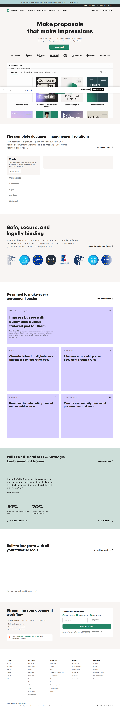
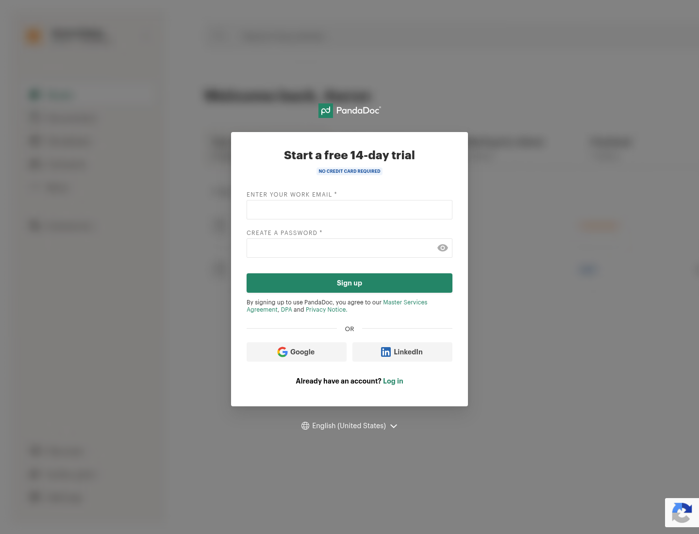
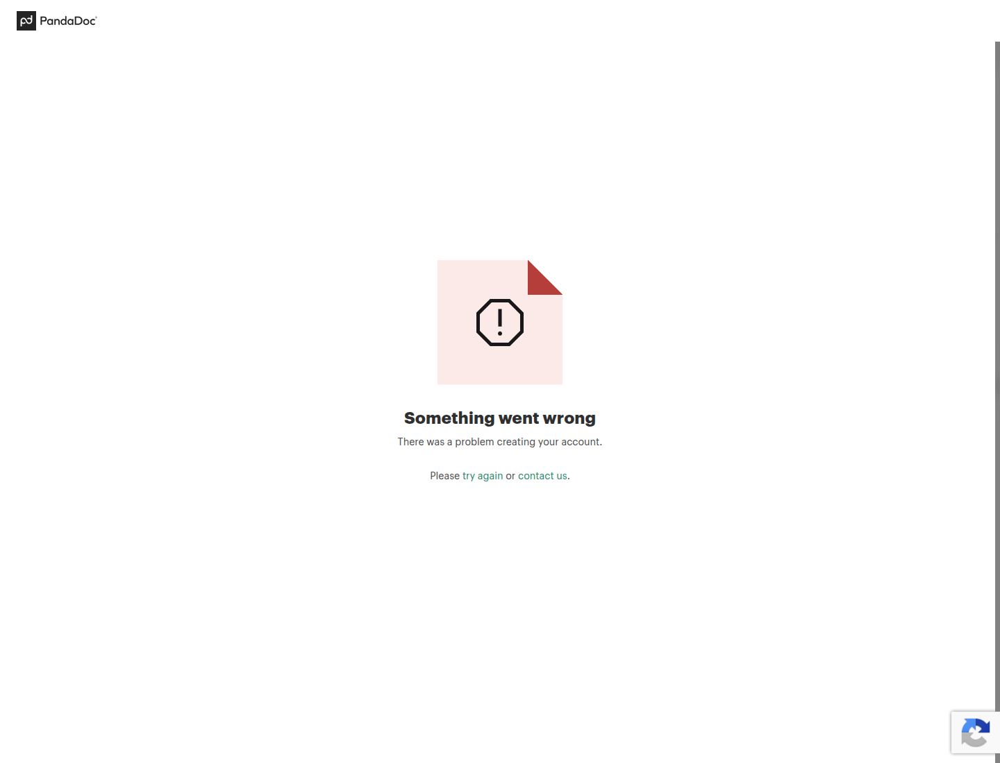

Profile
- Company
- PandaDoc
- Url
- https://www.pandadoc.com/
- Source Category
- NDA & deal-room tools
- Research Status
- Deep Cited Research / Draft Complete
- Current Status
- live - verified via direct fetch (HTTP 200, 2026); active product with current customer case studies and G2 '#1 in proposals, eSignature, and contract management' ranking claim on homepage
- Founded Launch Year
- 2011
- Company Age
- ~15 years (as of 2026)
- Hq Country
- United States (San Francisco, CA)
- Operating Area
- Global - broad industry coverage (Software & technology, Professional services, Education, Healthcare, Construction) and multi-team targeting (Sales, HR, Marketing, Customer success, Legal)
- Target Users
- Sales teams, HR, legal, and general business teams needing proposals, quotes, contracts, and e-signatures - not founder/investor-specific, though 'Deal Rooms' feature is relevant to fundraising-style document sharing
- Product Category
- Document generation, CPQ (configure-price-quote), e-signature, and 'Deal Rooms' (collaborative document/deal spaces) - broad sales/document workflow platform with an NDA-adjacent Deal Rooms feature
Product Flows
- Swipe Card Interface
- no - not found
- Mutual Match
- no - not applicable
- Ai Matching Scoring
- no - not found
- Ai Deck Scoring
- Partial - PandaDoc markets 'Smart content' (adapts documents to the recipient's requirements) and AI-assisted data extraction from uploaded documents, but this is document/content automation, not deck-quality scoring akin to BizMatch's AI deck-scoring concept
- Founder To Founder Flow
- Not a matching product; closest equivalent: user creates a document/proposal from a template -> uses drag-and-drop editor and 'Smart content' to tailor it -> sends for real-time collaborative redlining, comments, and approvals via Workspaces -> Deal Rooms let multiple parties collaborate and close deals in one personalized, persistent space (closer to a lightweight data room than a one-off document send) -> tracked via document analytics/audit trail.
- Founder To Investor Flow
- Same Deal Rooms / document-workflow mechanism applied generically to any deal context (not exclusively fundraising); NDA gating is not explicitly named as a Deal Rooms feature in available evidence, but PandaDoc's e-signature and 'Smart content' + 'Workspaces' collaboration features could functionally support an NDA-then-share workflow, similar in spirit to but less purpose-built for fundraising than Carta/DocSend/Digify.
- Project Profiles
- not found / no public source - no persistent discoverable project-profile/marketplace concept
- Messaging Collaboration
- yes - comments/reminders/approvals/tracking
- Mobile App
- yes
- Web App
- yes
Security & Documents
- Nda Gated Unlock
- Partial/not clearly confirmed as a dedicated feature - prior pass flagged 'yes' but the homepage evidence gathered does not explicitly name an 'NDA gating' feature (unlike Digify's 'One-Click NDA' or DocSend's 'One-Click NDA' or Carta's documented NDA-signature-before-access flow); PandaDoc's 'Deal Rooms' description ('Collaborate and close deals in one personalized deal room') does not explicitly mention NDA requirements. Downgrade confidence to 'not found / no public source' pending direct feature-page verification.
- Data Room
- Partial - 'Deal Rooms' is a named PandaDoc feature ('Rooms: Close deals fast in a digital space that makes collaboration easy'), available at the Business tier ($49/user/month) - functionally similar to a lightweight data room, though PandaDoc's core identity remains document/proposal/e-signature workflow rather than a dedicated VDR product
- E Signature
- yes
- Meeting Prep Ai Briefing
- no - not found
Pricing, Funding & Traction
- Pricing Model
- Tiered subscription (Starter/Business/Enterprise), Deal Rooms available at Business tier ($49/user/month) with CRM integrations; Notary available on Enterprise plan; free trial offered
- Business Model
- B2B SaaS subscription, per-user pricing with add-on modules (CPQ, Notary, API)
- Total Funding
- Raised a total of $75.7M across 9 rounds from 25 investors (per Tracxn); reached $1 billion 'unicorn' valuation with its Series C, announced September 22, 2021, led by OMERS Growth Equity and G Squared
- Funding Rounds
- Multiple rounds through Series C; notable Series B ($15M, May 2017, backed by Rembrandt Venture Partners, Microsoft Ventures/M12, HubSpot, Altos Ventures) and Series C (2021, $1B valuation, led by OMERS Growth Equity and G Squared)
- Investors
- OMERS Growth Equity, G Squared, Altos Ventures, Rembrandt Venture Partners, One Peak Partners, M12 (Microsoft Ventures), HubSpot (strategic investor)
- Funding Source Type
- VC and corporate-strategic backed (notably HubSpot and Microsoft as strategic investors, reflecting deep CRM/productivity ecosystem ties)
- Last Funding Date
- September 22, 2021 (Series C, $1B valuation)
- Users Traction
- Case studies cite Autodesk (tracks sales metrics org-wide), Nomad (cut CAC by 20%), TheKey (saves 3,000 hours/year); rated #1 in proposals, eSignature, and contract management by G2 per homepage claim
- Deals Funding Facilitated
- not found / no public source with a specific aggregate dollar figure
- Partnerships
- Extensive CRM/payment integrations: Salesforce, HubSpot, Pipedrive, Monday.com, Stripe, Square, PayPal, QuickBooks, Zapier, Slack, Greenhouse, and CPQ-specific integrations with Pipedrive/HubSpot/Salesforce
- Media Coverage
- TechCrunch covered the 2021 Series C/unicorn valuation ('PandaDoc, the e-document startup, now valued at $1B'); ongoing coverage in CMS Connected, ERP News, GlobeNewswire for funding rounds
- Product Update Activity
- Active - homepage references current 2026 features (Notary, CPQ, Deal Rooms, Smart content) and maintains a public 'Updates' page
- Acquisition Rebrand History
- No acquisition or rebrand found; independent, VC-backed private company as of 2026 (no IPO or subsequent M&A event identified)
Scores
- Product Overlap Score
- 2
- Feature Maturity Score
- 4
- Market Traction Score
- 4
- Funding Strength Score
- 4
- Ai Depth Score
- 2
- Nda Security Strength Score
- 2
- Network Moat Score
- 2
- Direct Threat Score
- 2.8
- Source Confidence
- High
Evidence Notes
- Primary Sources
- https://www.pandadoc.com/
https://www.pandadoc.com/mobile/
https://www.pandadoc.com/pricing/
https://support.pandadoc.com/en/articles/9714630-creating-sending-and-tracking-documents-with-the-mobile-app - Secondary Sources
- https://techcrunch.com/2021/09/22/pandadoc-the-e-document-startup-now-valued-at-1b-as-it-closes-a-big-series-c/
https://www.pandadoc.com/press/pandadoc-announces-series-c-financing-round-at-one-billion-valuation/
https://www.globenewswire.com/news-release/2017/05/23/995206/0/en/PandaDoc-Closes-15-Million-Series-B-backed-by-Rembrandt-Microsoft-Ventures-HubSpot-and-Altos.html
https://tracxn.com/d/companies/pandadoc/ - Unsupported Claims
- NDA-gating as a distinct, named feature could not be confirmed in this pass - downgraded from prior pass's unqualified 'yes' to 'not found/partial' pending direct verification of PandaDoc's Deal Rooms feature documentation.
- Contradictions
- Prior pass flagged nda_gated_unlock as 'yes' but this pass found no explicit feature documentation naming NDA gating within Deal Rooms - flagged as a downgrade/open item rather than a confirmed contradiction (may simply be under-documented on the public marketing site).
- Last Checked
- 2026-07-19
- Notes
- PandaDoc is best understood as a general sales-document/proposal/e-signature platform with a Deal Rooms feature that is deal-collaboration-oriented rather than purpose-built for fundraising/NDA-gated due diligence like Carta, DocSend, or Digify. Well-funded ($1B valuation, strong strategic investors) but lower direct product overlap with BizMatch's specific NDA-gated founder-investor use case.
Registration Flow
Research date: 2026-07-19. Screenshots are sanitized public copies from the private registration-flow capture set; credentials, tokens, verification links/codes, browser chrome, and private identifiers are not intentionally published.
Outcome: stopped at CAPTCHA / Cloudflare / anti-bot verification.
Stop point: Official signup.pandadoc.com error page immediately after one direct-email free-trial signup submission, before account creation, email verification, onboarding, plan activation, payment, or any OAuth permission screen
Blocker / boundary: PandaDoc's direct-email signup submission returned HTTP 400 and the official page reported that there was a problem creating the account. Because the signup form visibly used reCAPTCHA and the task forbids bypassing anti-bot controls, the failure was treated as the stop point and was not retried.
- Official PandaDoc homepage. The official public homepage presents PandaDoc's document workflow product and exposes both 'Start a trial' in the site header and 'Get Started' in the hero. The header route was used for the registration capture.
- Free 14-day trial signup form. The official signup.pandadoc.com form advertises a free 14-day trial with no credit card required. It requests a work email and password, provides a direct Sign up action, links the Master Services Agreement, DPA, and Privacy Notice, and offers Google and LinkedIn alternatives. The empty form was captured before any private data was entered; a reCAPTCHA badge is visibly present.
- Account-creation failure and stop point. The authorized registration email and site-specific password were entered privately and the direct signup form was submitted once. PandaDoc redirected to its official success-path page but displayed 'Something went wrong', 'There was a problem creating your account', and 'Please try again or contact us.' The signup request returned HTTP 400, so the flow was stopped without retrying or attempting to bypass the visible reCAPTCHA/anti-abuse control.


